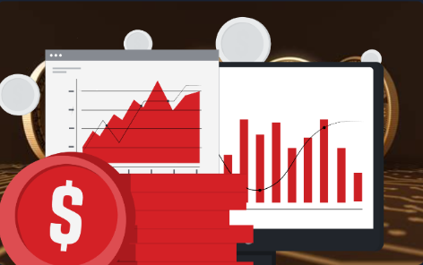
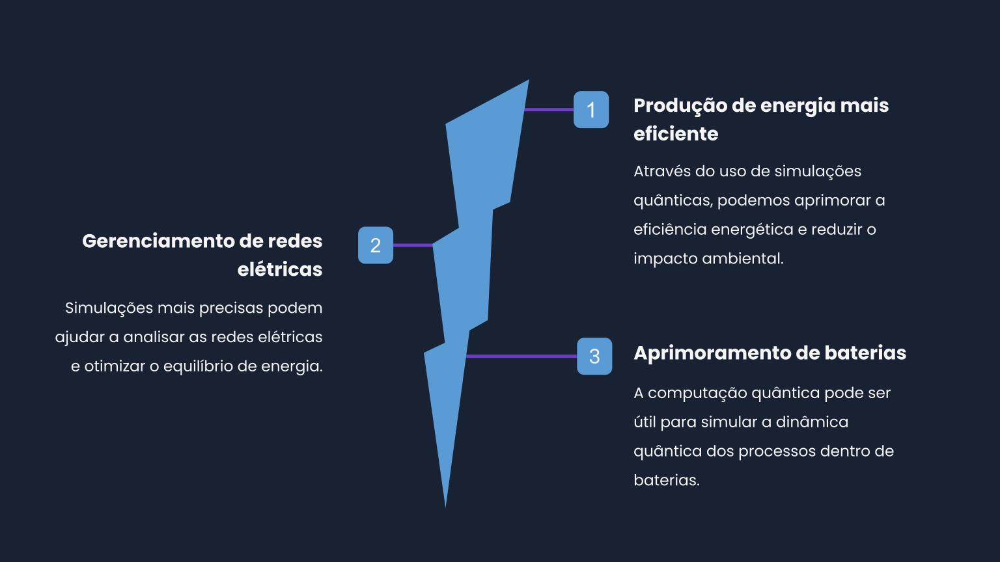
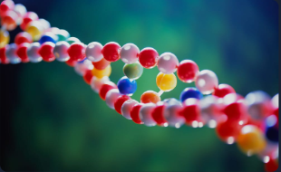

Decoerência
A decoerência é um desafio na Computação Quântica, pois a interação com o ambiente pode causar a perda de informações quânticas. Estratégias são utilizadas para minimizar esse efeito.
Aplicações Práticas da Computação Quântica
Está revolucionando a maneira como pensamos sobre a resolução de problemas complexos. Nesta apresentação, vamos explorar os setores e indústrias que podem se beneficiar, estudos de caso e exemplos reais, e o impacto potencial no campo da ciência da computação.
Setores e indústrias que podem se beneficiar
Está revolucionando a maneira como pensamos sobre a resolução de problemas complexos. Nesta apresentação, vamos explorar os setores e indústrias que podem se beneficiar, estudos de caso e exemplos reais, e o impacto potencial no campo da ciência da computação.
Finanças
Criptomoedas
Com a criptografia quântica, as moedas digitais podem se tornar mais seguras e resistentes
aos hackers.

Investimentos
Simulações complexas que tradicionalmente levariam séculos para serem feitas podem ser
feitas em questão de segundos.
Criptografia
Quebra de senhas
Através do uso de algoritmos quânticos, senhas podem ser quebradas em uma fração do tempo.
Chaves de criptografia
Chaves quânticas podem providenciar comunicação segura sem a possibilidade de interceptação.
Data segura
Com a ajuda da criptografia quântica, as comunicações online podem ser mais seguras do que
nunca.
Logística
Transporte
Aprender como resolver problemas de roteamento pode ajudar a otimizar o fluxo de transporte.
Armazém
A computação quântica pode ajudar a gerenciar melhor o espaço e a prever possíveis problemas.
Aeroportos e estações de trem
A tecnologia pode ser aplicada para gerenciar o fluxo de Bagagem dentro desses lugares movimentados.
Energia

Produção de energia mais eficiente
Através do uso de simulações quânticas, podemos aprimorar a eficiência energética e reduzir
o impacto ambiental.
Gerenciamento de redes elétricas
Simulações mais precisas podem ajudar a analisar as redes elétricas e otimizar o equilíbrio
de energia.
Aprimoramento de baterias
A computação quântica pode ser útil para simular a dinâmica quântica dos processos dentro de
baterias.
Medicina

DNA
Com a ajuda da computação quântica, é possível sequenciar o DNA com uma precisão sem
precedentes.

Desenvolvimento de medicamentos
Com as simulações moleculares mais precisas feitas pela computação quântica, podemos
acelerar o processo de desenvolvimento do medicamento.

Terapia de Radiação Quântica
A computação quântica pode ser usada para modelar melhor o impacto da radiação quando se
escolhe a dose certa para tratar o câncer.
Estudos de casos
-
Empresa IBM
A IBM está trabalhando em um projeto de computação quântica para desenvolver novos materiais para baterias de íons de lítio.
-
Volkswagen
A Volkswagen está utilizando a computação quântica para otimizar o tráfego de veículos em cidades
-
Goldman Sachs
A integração A Goldman Sachs está trabalhando em parceria com a AWS, o HSBC e a IBM para investigar o uso da computação quântica na indústria financeira
Impactos potencial
Processamento avançado
A computação quântica tem o potencial de acelerar o processamento de problemas complexos,
superando as limitações dos computadores clássicos.
Comunicação quântica
A comunicação quântica possibilita a transmissão segura de informações, baseada nos
princípios da física quântica, garantindo criptografia e privacidade.
Algoritmos quânticos
Os algoritmos quânticos podem resolver problemas de maneira mais eficiente do que os
algoritmos clássicos, abrindo portas para novas descobertas e aplicações.